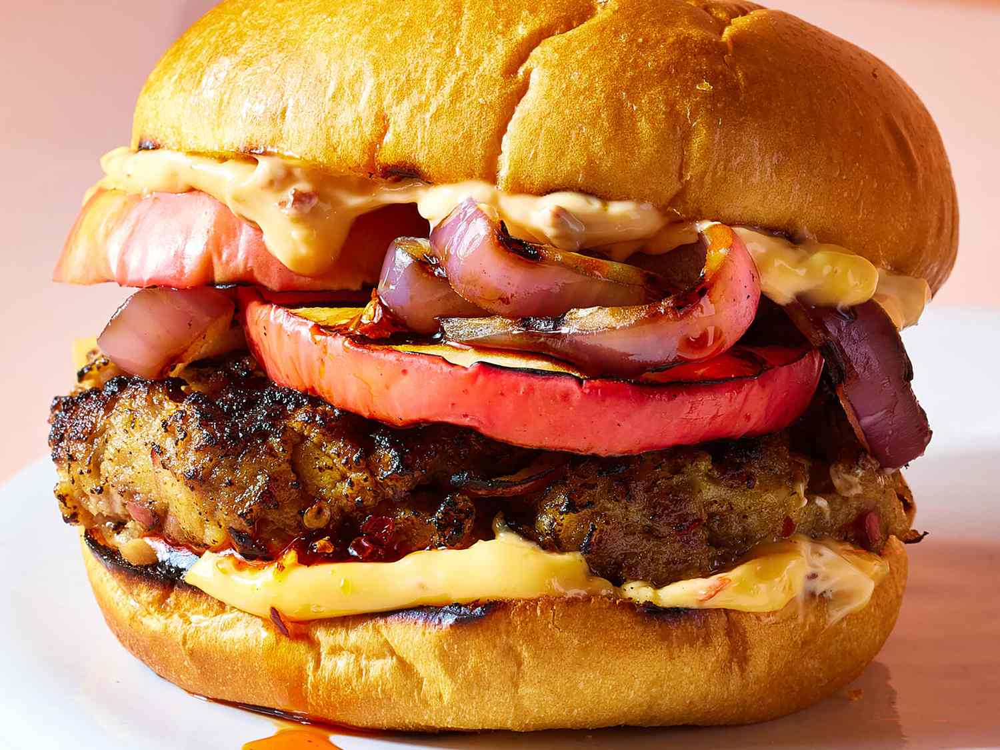

Hamburgers with Grilled Apple and Chili Crisp

Description
These hamburgers with grilled apple and chili crisp are juicy and delicious. For your summer grilling, level up beef patties with grilled sweet-tart apples and thick-cut onions and chili-crisp mayo.
- 2 red apples, cored (such as Fuji, Gala, or Pink Lady)
- 1 pound ground beef
- 1/4 cup fine dry breadcrumbs
- 1 tablespoon plus 2 teaspoons chili crisp, divided, plus more for serving
- 1/2 teaspoon salt
- 12 (1/3-inch) slices red onion
- 4 hamburger buns
- 1/4 cup mayonnaise
Steps
- Slice 1 apple using a mandoline slicer to create 8 (1/4-inch-thick) slices. Shred any remaining scraps plus all or part of the second apple to get 1/2 cup shredded apple. Squeeze shredded apple to extract some of the moisture. Reserve any remaining apple for another use.
- Preheat an outdoor grill to medium heat (350 to 375 degrees F (175 to 190 degrees C)).
- Combine ground beef, breadcrumbs, 1 tablespoon chili crisp, salt, and the 1/2 cup shredded apple in a bowl. Shape into 4 (1/2-inch-thick) patties, 4 inches in diameter. Mixture may be wet so be sure to tightly pack patties.
- Oil the grill grate. Grill patties, covered, carefully turning halfway through, until an instant-read thermometer inserted into centers of patties reads 160 degrees F (71 degrees C), 10 to 13 minutes. Grill onion slices, turning halfway through, 8 to 10 minutes. Grill apple slices, turning halfway through, 4 to 5 minutes. If you like, grill buns, cut sides down, until toasted, 1 to 2 minutes. When onions are cool enough to handle, separate rings.
- Stir mayonnaise and remaining 2 teaspoons chili crisp together in a small bowl. Spread buns with mayonnaise mixture and fill with patties, onion, and apple slices. Serve with additional chili crisp